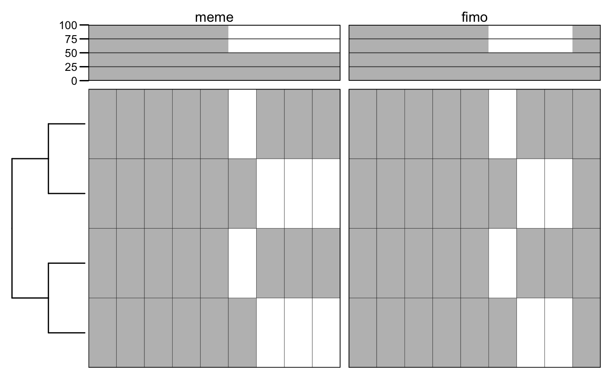
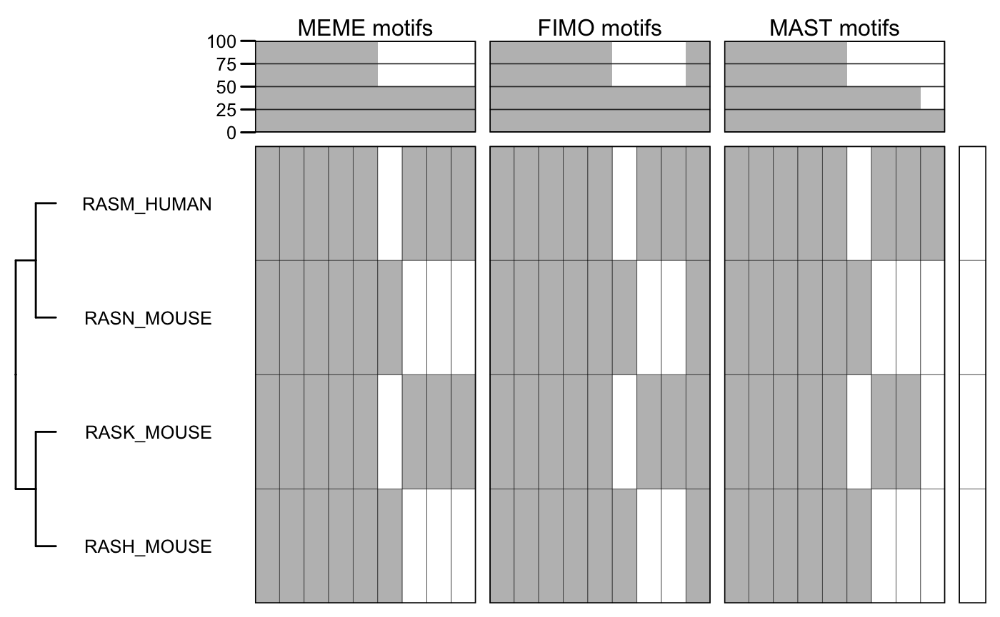
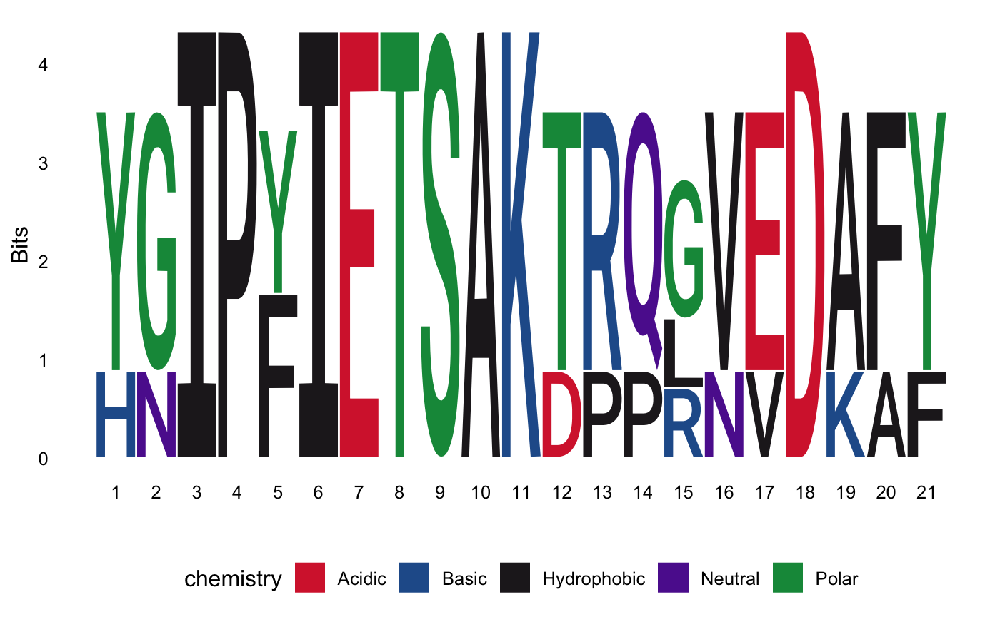
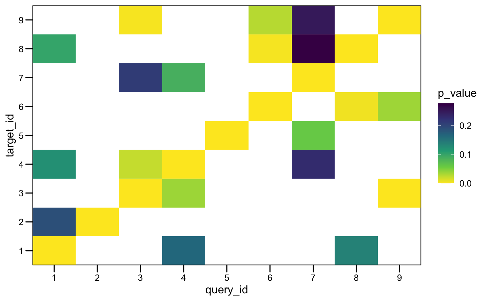

Introduction to motiftools
Diego Diez
4 May 2020
introduction.RmdAbstract
Introduction to the motiftools package.
Introduction
motiftools is a package for the analysis and interpretation of sequence motifs. Its initial implementation is focused on protein motif analysis obtained from the MEME suite, but its functionality may extend to other applications and tools, including analysis of nucleotide sequences and motif analysis tools found in Bioconductor or CRAN.
Motif ranges are stored as RangedData objects (IRanges) package). This allows to include metadata, like p-value, score and other output from the search process.
Plotting functions
Alignments
You can align two protein sequences specifying a particular substitution matrix (e.g. BLOSUM62).
data("BLOSUM62", package = "Biostrings") align("EGGALAPA", "DGGIVLPSAV", score.matrix = BLOSUM62, type = "global")$alignment
## 1 2 3 4 5 6 7 8 9 10
## x "E" "G" "G" "-" "A" "L" "A" "P" "-" "A"
## y "D" "G" "G" "I" "V" "L" "-" "P" "S" "A"align("EGGALAPA", "DGGIVFFRF", score.matrix = BLOSUM62, type = "local")$alignment
## 1 2 3 4 5 6
## x "E" "G" "G" "A" "L" "A"
## y "D" "G" "G" "-" "I" "V"Motifs
# load MEME results. f <- system.file("files/meme.xml", package = "motiftools") x_meme <- readMEME(f) m_meme <- getMotifMatrix(x_meme) plotMotifMatrix(m_meme, fill = c("white", "grey"))
## Scale for 'y' is already present. Adding another scale for 'y', which will
## replace the existing scale.# load FIMO results. f <- system.file("files/fimo.xml", package = "motiftools") x_fimo <- readFIMO(f) m_fimo <- getMotifMatrix(x_fimo) plotMotifMatrix(list(meme = m_meme, fimo = m_fimo), fill = c("white", "grey"), col = "black")
## Scale for 'y' is already present. Adding another scale for 'y', which will
## replace the existing scale.
# load MAST results. f <- system.file("files/mast.xml", package = "motiftools") x_mast <- readMAST(f) m_mast <- getMotifMatrix(x_mast) plotMotifMatrix(list("MEME motifs" = m_meme, "FIMO motifs" = m_fimo, "MAST motifs" = m_mast), fill = c("white", "grey"), col = "black")
## Scale for 'y' is already present. Adding another scale for 'y', which will
## replace the existing scale.# highlight some sequences. annot <- matrix(1, nrow = nseq(x_meme), ncol = 1, dimnames = list(sequenceNames(x_meme))) annot["RASH_MOUSE", ] <- 2 annot["RASK_MOUSE", ] <- 3 annot
## [,1]
## RASH_MOUSE 2
## RASK_MOUSE 3
## RASN_MOUSE 1
## RASM_HUMAN 1plotMotifMatrix(list("MEME motifs" = m_meme, "FIMO motifs" = m_fimo, "MAST motifs" = m_mast), fill = c("white", "grey"), col = "black", annot = list(annot), annot.fill = list(c("white", "red", "blue")), show.tips = TRUE)
## Scale for 'y' is already present. Adding another scale for 'y', which will
## replace the existing scale.

You can compare the motifs obtained with MEME using the TOMTOM tool. Then you can read the results and look at the comparison matrix.
f <- system.file("files/tomtom.xml", package = "motiftools") x_tomtom <- readTOMTOM(f) plotMotifMatches(x_tomtom)

plotMotifMatches(x_tomtom, fill = "e_value", color = "black")

Architectures
Sometimes different motifs are arranged in different order in different sequences, suggesting processes of reordering. Motif ordering is called in motiftools architectures. You can obtain the architectures from the sequences used to compute the MEME motifs and compute the similarity between them.
getMotifsBySeq(x_meme) # returns a list with the ordered motif composition as a character vector.
## $RASH_MOUSE
## [1] "3" "1" "2" "4" "5" "6"
##
## $RASK_MOUSE
## [1] "3" "9" "1" "2" "4" "5" "7" "8"
##
## $RASN_MOUSE
## [1] "3" "1" "2" "4" "5" "6"
##
## $RASM_HUMAN
## [1] "9" "3" "1" "2" "4" "5" "7" "8"getMotifArchString(x_meme) # returns a list with a single string with the architecture encoded.
## RASH_MOUSE RASK_MOUSE RASN_MOUSE RASM_HUMAN
## "3-1-2-4-5-6" "3-9-1-2-4-5-7-8" "3-1-2-4-5-6" "9-3-1-2-4-5-7-8"# compute sequence motif Jaccard similarity. s <- getMotifSimilarity(x_meme) s
## RASH_MOUSE RASK_MOUSE RASN_MOUSE RASM_HUMAN
## RASH_MOUSE 1.0000000 0.5555556 1.0000000 0.5555556
## RASK_MOUSE 0.5555556 1.0000000 0.5555556 1.0000000
## RASN_MOUSE 1.0000000 0.5555556 1.0000000 0.5555556
## RASM_HUMAN 0.5555556 1.0000000 0.5555556 1.0000000
# compute sequence motif architecture Jaccard similarity. s <- getMotifArchSimilarity(x_meme) s
## RASH_MOUSE RASK_MOUSE RASN_MOUSE RASM_HUMAN
## RASH_MOUSE 1.0000000 0.3333333 1.0000000 0.3333333
## RASK_MOUSE 0.3333333 1.0000000 0.3333333 0.5000000
## RASN_MOUSE 1.0000000 0.3333333 1.0000000 0.3333333
## RASM_HUMAN 0.3333333 0.5000000 0.3333333 1.0000000
Sequences
We can visualize MSA conservation together with a phylogenetic tree.
ras_tree <- read.tree(system.file("files/ras.tree", package = "motiftools")) ras_aln <- readAAMultipleAlignment(system.file("files/ras.faln", package = "motiftools")) rownames(ras_aln) <- sub(" .*", "", rownames(ras_aln)) # need to fix sequence names. plotConservationMatrix(ras_aln, ras_tree, show.tips = TRUE)
## Scale for 'y' is already present. Adding another scale for 'y', which will
## replace the existing scale.